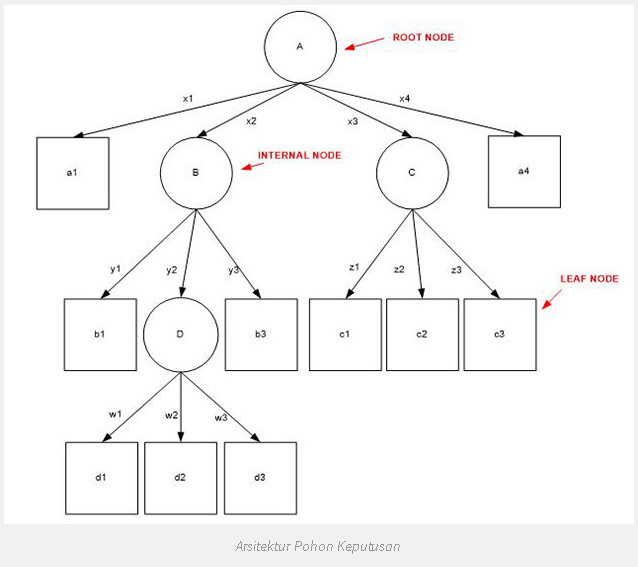
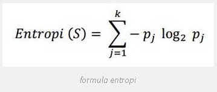
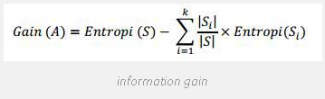
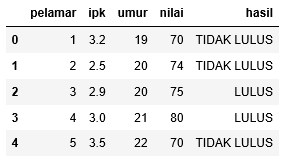
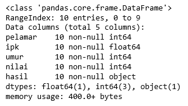
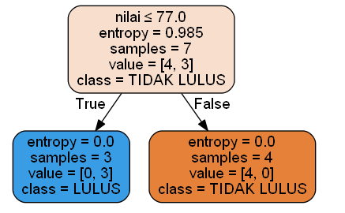

Decision Tree Classifier (Gain)
Pohon keputusan adalah salah satu metode klasifikasi yang paling populer karena mudah untuk diinterpretasi oleh manusia. Pohon keputusan adalah model prediksi menggunakan struktur pohon atau struktur berhirarki. Konsep dari pohon keputusan adalah mengubah data menjadi pohon keputusan dan aturan-aturan keputusan. Manfaat utama dari penggunaan pohon keputusan adalah kemampuannya untuk mem-break down proses pengambilan keputusan yang kompleks menjadi lebih simpel sehingga pengambil keputusan akan lebih menginterpretasikan solusi dari permasalahan.
Pohon Keputusan juga berguna untuk mengeksplorasi data, menemukan hubungan tersembunyi antara sejumlah calon variabel input dengan sebuah variabel target. Pohon keputusan memadukan antara eksplorasi data dan pemodelan, sehingga sangat bagus sebagai langkah awal dalam proses pemodelan bahkan ketika dijadikan sebagai model akhir dari beberapa teknik lain. Sering terjadi tawar menawar antara keakuratan model dengan transparansi model. Dalam beberapa aplikasi, akurasi dari sebuah klasifikasi atau prediksi adalah satu-satunya hal yang ditonjolkan, misalnya sebuah perusahaan direct mail membuat sebuah model yang akurat untuk memprediksi anggota mana yang berpotensi untuk merespon permintaan, tanpa memperhatikan bagaimana atau mengapa model tersebut bekerja.
Kelebihan
- Daerah pengambilan keputusan yang sebelumnya kompleks dan sangat global, dapat diubah menjadi simple dan spesifik.
- Eliminasi perhitungan-perhitungan yang tidak diperlukan, karena ketika menggunakan metode pohon keputusan maka contoh diuji hanya berdasarkan kriteria atau kelas-kelas tertentu.
- Fleksibel untuk memilih fitur dari internal node yang berbeda, fitur yang terpilih akan membedakan suatu kriteria dibandingkan kriteria yang lain dalam node yang sama.
- Metode pohon keputusan dapat menghindari munculnya permasalahan ini dengan menggunakan kriteria yang jumlahnya lebih sedikit pada setiap node internal tanpa banyak mengurangi kualitas keputusan yang dihasilkan.
Kekurangan
- Terjadi overlap terutama ketika kelas-kelas dan kriteria yang digunakan jumlahnya sangat banyak. Hal tersebut juga dapat menyebabkan meningkatnya waktu pengambilan keputusan dan jumlah memori yang diperlukan.
- Pengakumulasian jumlah eror dari setiap tingkat dalam sebuah pohon keputusan yang besar.
- Kesulitan dalam mendesain pohon keputusan yang optimal
- Hasil kualitas keputusan yang didapatkan dari metode pohon keputusan sangat tergantung pada bagaimana pohon tersebut didesain.
Arsitektur Pohon Keputusan
Arsitektur pohon keputusan dibuat menyerupai bentuk pohon, dimana pada umumnya sebuah pohon terdapat akar (root), cabang dan daun (leaf). Pada pohon keputusan juga terdiri dari tiga bagian sebagai berikut :
a. Root node atau node akar merupakan node yang terletak paling atas dari suatu pohon.
b. Internal Node ini merupakan node percabangan, dimana pada node ini hanya terdapat satu input dan mempunyai minimal dua output.
c. Leaf Node ini merupakan node akhir, hanya memiliki satu input, dan tidak memiliki output. Pada pohon keputusan setiap leaf node menandai label kelas.
Gambar berikut merupakan bentuk arsitektur pohon keputusan.

Algoritma
- Pohon dibangun dalam suatu metoda rekursif topdown divide and-conquer.
- Seluruh contoh pelatihan dimulai dari simpul root, lalu dilakukan penujian.
- Mencabang ke jalur yang benar berdasarkan hasil pengujian.
- Apakah simpul leaf ditemukan? Jika true, masukkan ke kelas target, jika false kembali ke langkah awal.
- Atribut-atribut berada dalam suatu kategori (jika bernilai kontinu, nilai-nilai tersebut didistribusikan terlebih dahulu).
- Contoh-contoh dipartisi secara rekursif berdasarkan atribut terpilih.
- Atribut-atribut uji dipilih berdasarakn heuristik atau pengukurann statistik (misal, information gain).
Entropy & Information Gain
Algoritma pada metode ini menggunakan konsep dari entropi. Konsep Entropi yang digunakan untuk mengukur “seberapa informatifnya” sebuah node (yang biasanya disebut seberapa baiknya).
Entropi(S) = 0, jika semua contoh pada S berada dalam kelas yang sama. Entroiy(S) = 1, jika jumlah contoh positif dan jumlah contoh negatif dalam S adalah sama. 0 < Entropi(S) < 1, jika jumlah contoh positif dan negatif dalam S tidak sama.

Dimana: • S adalah himpunan (dataset) kasus • k adalah banyaknya partisi S • pj adalah probabilitas yang di dapat dari Sum(Ya) dibagi Total Kasus.
Setelah mendapat nilai entropi, pemilihan atribut dilakukan dengan nilai information gain terbesar.

IMPLEMENTASI (studi kasus : JOB APPLICANT)
Sebelum menerapkan konsep decision tree pada studi kasus yang telah ditentukan, beberapa tools yang perlu dipersiapkan agar program yang kita rancang bisa dieksekusi dengan baik diantaranya:
- python 3.x (versi 3 keatas).
- Anaconda Navigator
Berikut source code dan penjelasan untuk menyelesaikan study kasus tersebut dengan konsep Decision Tree Clasification.
Pertama
Import beberapa library dari python seperti:
- pandas => memuat sebuah file ke dalam tabel virtual ala spreadsheet yang memiliki struktur data yang diperukan untuk membersihkan data mentah ke dalam sebuah bentuk yang cocok untuk dianalisis.
- numpy => untuk operasi vektor dan matriks. Fiturnya hampir sama dengan MATLAB dalam mengelola array dan array multidimensi.
- sklearn => untuk mengimportkan library data science. Berbagai fungsi didalamnya seperti fungsi agregasi, hitung metriks, hitung akurasi, display gambar, dan lain sebagainya.
- seaborn => library untuk membuat grafik statistik.
- pydotplus => library untuk memvisualisasikan bentuk hirarki.
#import library
import pandas as pd
from sklearn.tree import DecisionTreeClassifier
from sklearn.model_selection import train_test_split
from sklearn import metrics
from sklearn.metrics import accuracy_score
import seaborn as sns
from sklearn.tree import export_graphviz
from sklearn.externals.six import StringIO
from IPython.display import Image
from sklearn.tree import export_graphviz
import pydotplus
import numpy as np
Kedua
Mengimport data dari komputer dengan perintah pandas.
data=pd.read_csv('nilai.csv')
#Pastikan file data set berada dalam folder yang sama dengan file jupyter notebook
Ketiga
Menampilkan data.
data.head()

Keempat
Melihat info kolom dari data.
data.info()

Kelima
Memilih kolom uji untuk dihitung hasilnya.
zero_not_accepted = ['pelamar','ipk','umur','nilai']
# for col in zero_not_accepted:
# for i in data[col]:
# if i==0:
# colSum = sum(data[col])
# meanCol=colSum/len(data[col])
# data[col]=meanCol
for col in zero_not_accepted:
data[col]= data[col].replace(0,np.NaN)
mean = int(data[col].mean(skipna=True))
data[col] = data[col].replace(np.NaN,mean)
Keenam
Membagi data train dan data test dengan data test 30%.
X = data.iloc[:,0:3] #memilih objek data X dengan array
y = data.iloc[:,3] #memilih objek data y dengan array
#build model & train data
X = data[['pelamar','ipk','umur','nilai']]
y = data['hasil']
#split data
X_train, X_test, y_train, y_test = train_test_split(X, y, test_size = 0.3, random_state=0)
Ketujuh
Menentukan entropy data.
clf = DecisionTreeClassifier(criterion="entropy", max_depth=4)
clf = clf.fit(X_train,y_train)
y_pred = clf.predict(X_test)
Kedelapan
Meenentukan simpul root, simpul perantara, dan simpul leaf dari data yang telah diketahui nilai entropy-nya.
feature_cols = ['pelamar','ipk','umur','nilai']
dot_data = StringIO()
export_graphviz(clf, out_file=dot_data,
filled=True, rounded=True,
special_characters=True,feature_names = feature_cols,class_names=['TIDAK LULUS','LULUS'])
graph = pydotplus.graph_from_dot_data(dot_data.getvalue())
graph.write_png('job.png')
Image(graph.create_png())

Referensi
- https://en.wikipedia.org/wiki/Decision_tree.
- http://tessy.lecturer.pens.ac.id/kuliah/db2/klasifikasi.pdf.
- Discovering Knowledge in Data (Introduction to Data Mining), Chapter 6, Daniel T. Larose, Wiley, 2004.